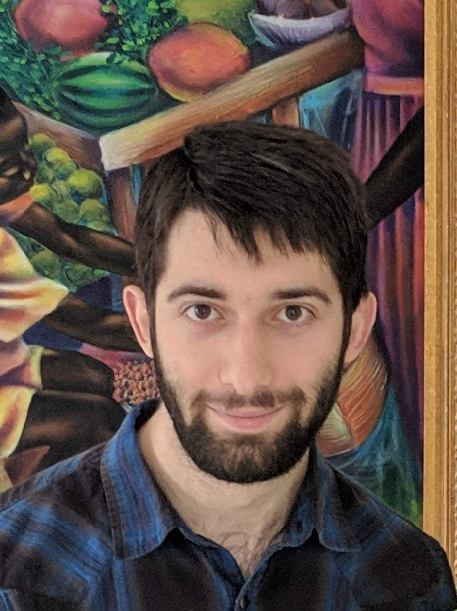

|  |
Hello!
My name is Gabriel Eiseman, welcome to my website!
I graduated from Rutgers University New Brunswick in 2019 with a BS in mathematics and computer science and a minor in Physics. Then, I started a PhD program in computer science at Georgia Tech, focusing on programming languages and formal methods, but left in 2020. I worked on a couple projects with Professor Qirun Zhang, including one about rewriting recursive functions which I presented at the Student Research Competition at POPL 2020 (see projects page), and one with Professor David Devecsery focused on applying optimistic hybrid analysis to Java programs. As an undergraduate, I took a lot of graduate courses including operating systems, compilers, artificial intelligence, convex optimization (in the ece department), complex analysis, axiomatic set theory, and quantum field theory (the last two were pass/no credit) (I passed). I also did research at the DIMACS REU at Rutgers in the Summer of 2018 where I studied sphere packings and the minimum constructablity of Apollonian circles (see projects page). I'm primarily interested in programming languages, problems that relate to math or physics, and low level or systems programming. My projects page includes some examples outside of prior work experience and 7+ years of using linux as my only operating system. Aside from numbers and machines of the computing variety, my interests include origami (you might find some references to that around these pages), running (I ran the Rutgers half marathon in 2019 and frequently made use of the pi mile trail at Georgia Tech), board and videogames, and cooking and baking. |